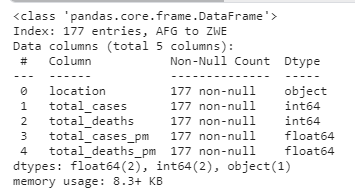
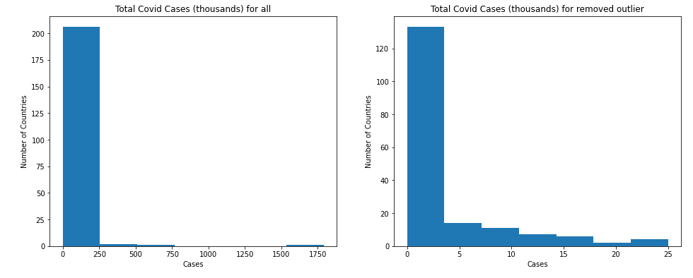

§ 결측치 찾기 이론
§ 결측치 찾기 실습
§ 변수 1개를 이용하여 이상값 찾기
§ 변수 2개를 이용하여 이상값 찾기
이상값 찾기
주관적이며 연구자 마다 다르고, 산업에 따라 차이가 있다.
통계에서의 이상값
정규 분포를 이루고 있지 않음 : 이상값이 존재
왜도, 첨도가 발생.
균등분포(Uniform distribution)
1. 변수 1개를 이용하여 이상값 찾기
1 2 3 4 5 6 7 8 9 10 11 12 13 import numpy as npimport matplotlib.pyplot as pltimport pandas as pdimport statsmodels.api as sm import scipy.stats as scistat covidtotals = pd.read_csv("../input/covid-data/covidtotals.csv" ) covidtotals.set_index("iso_code" , inplace = True ) case_vars = ["location" , "total_cases" , "total_deaths" , "total_cases_pm" , "total_deaths_pm" ] demo_vars = ["population" , "pop_density" , "median_age" , "gdp_per_capita" , "hosp_beds" ] covidtotals.head()
결측치와 마찬가지로 covidtotals data를 kaggle note에 불러와서 실행
백분위수(quantile)로 데이터 표시
1 2 3 4 5 covid_case_df = covidtotals.loc[:, case_vars] covid_case_df.describe covid_case_df.quantile(np.arange(0.0 , 1.1 , 0.1 ))
왜도(대칭 정도), 첨도(뾰족한 정도) 구하기
왜도 구하기 1 covid_case_df.skew(axis=0 , numeric_only = True )
total_cases 10.804275
-1~1사이에 있어야 대칭이다.
skewness < |3| : 기본적 허용대칭이 아닌 것을 알 수 있다. = 정규분포가 아니다.
)
첨도 구하기
정규 분포의 첨도는 0이다.
0보다 크면 더 뾰족하고
0보다 작으면 뭉툭하다.
1 2 covid_case_df.kurtosis(axis=0 , numeric_only = True )
total_cases 134.979577
5~10 정도 사이에 첨도가 있어야 하는데 정규분포를 이루고 있지 않다.
( = 정규분포가 아니다.
)
이산값이 있을 확률이 높다는 것을 알 수 있다.
정규성 검정 테스트
정규성 가정을 검토하는 방법
Q-Q plot
그래프로 정규성 확인
Shapiro-Wilk Test (샤피로-윌크 검정)
귀무가설 : 표본의 모집단이 정규 분포를 이루고 있다. (H0: 정규분포를 따른다 p-value > 0.05)
대립가설 : 표본의 모집단이 정규 분포를 이루고 있지 않다.
p value < 0.05 : 귀무가설을 충족하지 않아 대립가설로
Kolnogorov-Smirnov test (콜모고로프-스미노프 검정)
EDF(Empirical distribution fuction)에 기반한 적합도 검정방법
자료의 평균/표준편차, Histogram을 통해 표준 정규분포와 비교하여 적합도 검정.
p value > 0.05 : 정규성 가정
Shapiro-Wilk Test 1 2 scistat.shapiro(covid_case_df['total_cases' ])
ShapiroResult(statistic=0.19379639625549316, pvalue=3.753789128593843e-29)
우리는 p value 를 가지고 유의성을 확인한다.
p value : 3.75e-29 이므로 정규분포를 이루지 않음.
covid_case_df[‘total_cases’] 안에 아래 column들을 하나씩 다 넣어 봐야 한다.
1 2 case_vars = ["location" , "total_cases" , "total_deaths" , "total_cases_pm" , "total_deaths_pm" ] demo_vars = ["population" , "pop_density" , "median_age" , "gdp_per_capita" , "hosp_beds" ]
함수를 짜면 너의 code가 될 것이라고 한다.
qqplot
통계적 이상값 범위 : 1사분위 (25%), 3사분위(75%) 사이의 거리
그 거리가 상하좌우 1.5배를 넘으면 이상값으로 여김
1 2 3 sm.qqplot(covid_case_df[["total_cases" ]].sort_values( ["total_cases" ]), line = 's' ) plt.title("Total Class" )
1 2 3 4 5 6 7 8 thirdq = covid_case_df["total_cases" ].quantile(0.75 ) firstq = covid_case_df["total_cases" ].quantile(0.25 ) interquantile_range = 1.5 * (thirdq- firstq) outlier_high = interquantile_range + thirdq outliner_low = firstq - interquantile_range print (outliner_low, outlier_high, sep = " <-------> " )
-14736.125 <——-> 25028.875
이상치를 제거한 data 가져오기
조건: outlier_high 보다 높은 이상치 or outlier_low 보다 낮은 이상치
1 2 remove_outlier_df = covid_case_df.loc[~(covid_case_df["total_cases" ]>outlier_high)|(covid_case_df["total_cases" ]<outliner_low)] remove_outlier_df.info()

1 2 remove_outlier_df = covid_case_df.loc[(covid_case_df["total_cases" ]>outlier_high)|(covid_case_df["total_cases" ]<outliner_low)] remove_outlier_df.info()
1 2 3 4 5 6 7 8 9 10 fig, ax = plt.subplots(figsize = (16 , 6 ), ncols = 2 ) ax[0 ].hist(covid_case_df["total_cases" ]/1000 , bins = 7 ) ax[0 ].set_title("Total Covid Cases (thousands) for all" ) ax[0 ].set_xlabel("Cases" ) ax[0 ].set_ylabel("Number of Countries" ) ax[1 ].hist(remove_outlier_df["total_cases" ]/1000 , bins = 7 ) ax[1 ].set_title("Total Covid Cases (thousands) for removed outlier" ) ax[1 ].set_xlabel("Cases" ) ax[1 ].set_ylabel("Number of Countries" ) plt.show()

완벽하진 않지만, 먼 잔차들을 제거한 정규 분포를 이루는 듯한 그래프를 얻을 수 있었다.
이를 train data에 EDA로 돌리고, ML을 진행 하면 더 좋은 score를 얻을 수도 있고, 아닐 수도 있다.
just Test